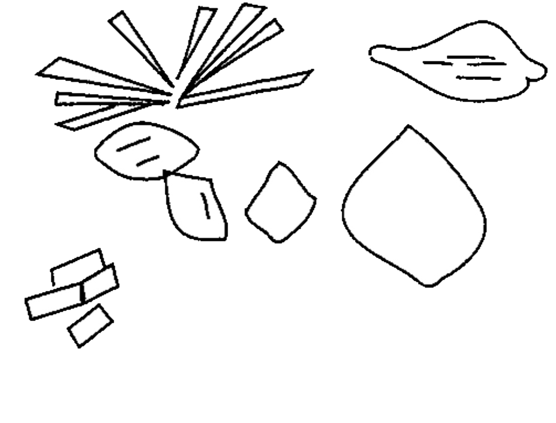
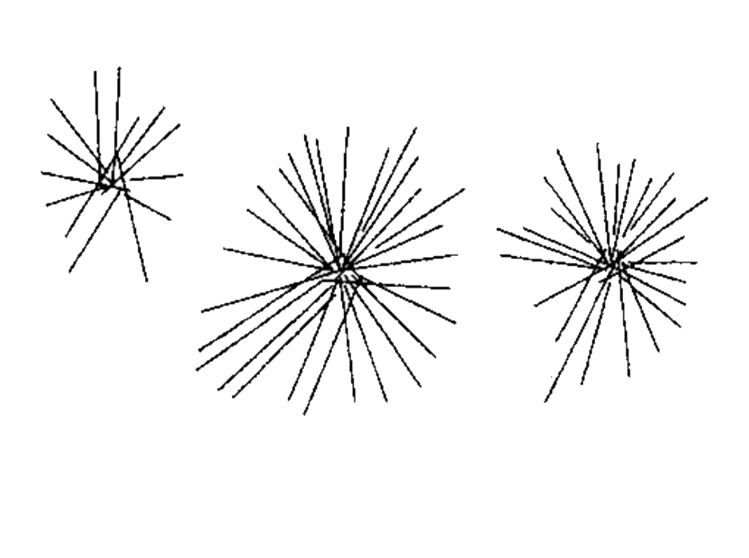
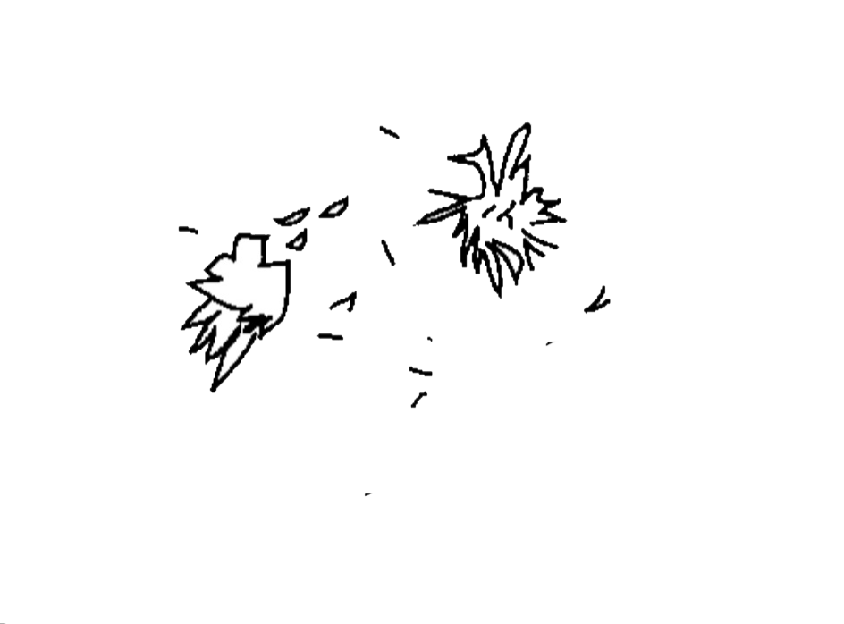

- Polymorphs (different in shape) i.e. square, prism, hexagonal, rostelles.
- Yellow to yellow brown in color.
- Size is 30-150 μm.

• Small quantity found in normal urine, but increases in association with :
1. Increased Purine metabolism in case of gout.
2. Increased Nucleic Acid turn over, such as leukemia.
- Rarely found.
- Flat, hexagonal plates with well defined edges.
- Colorless, and highly retractile.
- Size is 30-60 μm.
- Found only in fresh urine, because if there is delay, they are soluble and not seen.
- Appeared during cystinosis, which is a hereditary disease (Wilson disease), or during transient acute phase of pyelonephritis. Its appearance in the urine is called cystinuria.

- (Anhydrous uric acid) : Normally present in urine in different quantity.
- Have pink to “brick red” color.
 - From very small granules and seen in cluster.
- From very small granules and seen in cluster.
- Dissolve in urine when the sample is gently heated.
- When urine is left in the refrigerator, it shows heavy precipitation of urates.
- Rarely found.
- Colorless and retractile.
- Have “broken window” shape, with notches on one side.
- 50-100 μm in size.
- Soluble in ether.
- Rarely found.
- Colorless or yellowish.

- Have fine silky needle in sheaves or rosettes shape.
- Indicate protein break down problem, or severe liver diseases.
- Soluble in ether.
- Rarely found.
- Yellow to yellow brown in color.
- Spheroid in shape with striation.
- Seen in case of protein breakdown problem, or severe liver disease.
- Very rarely seen.
- Have reddish brown color.
- Have various tiny squarish, beads or amorphous needle shape.

- Size is 5 μm (half RBC).
- Chemical test for bile pigments positive.
- Seen in case of elevated Bilirubin
- Have large prism or flat bladder shaped.
- Seen separately or in bundles.
- Size 50-100 μm.
- Can be distinguished from calcium phosphate crystals by measuring pH of urine.